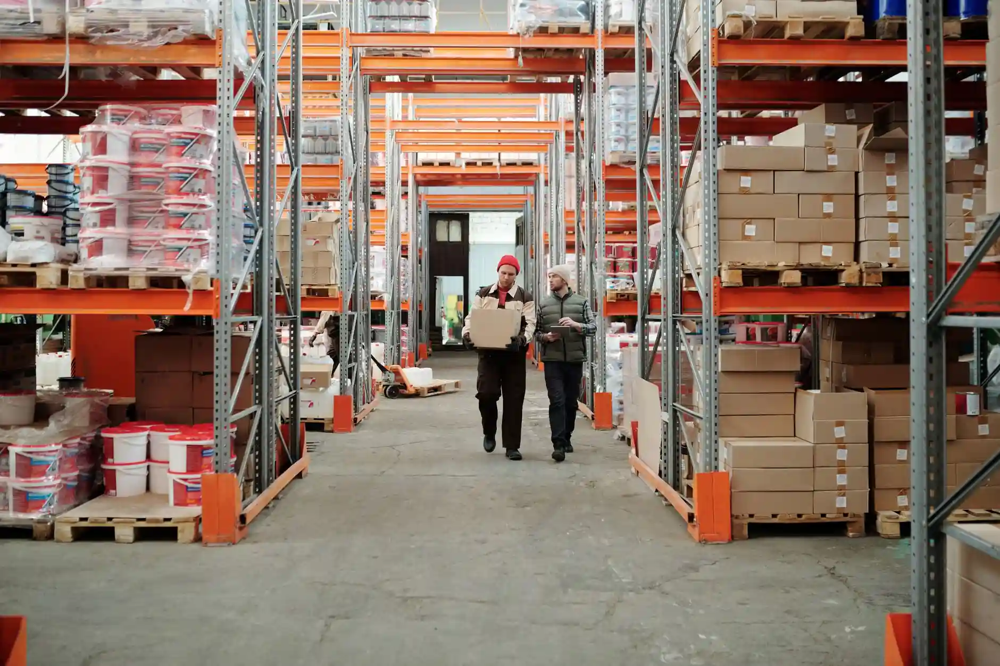
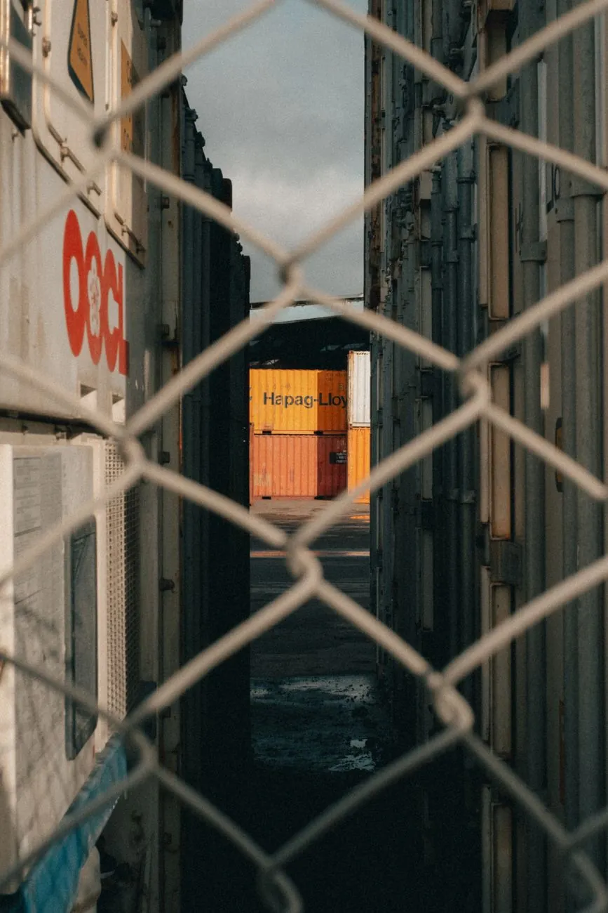
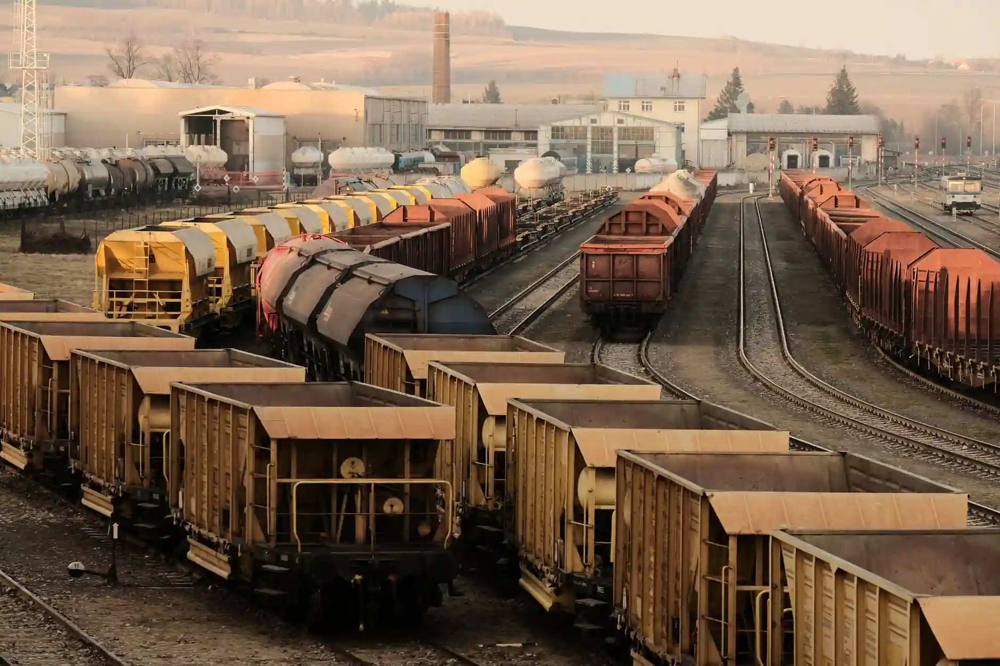

Field notes on freight, inventory, and procurement from our own operators and analysts — plus the occasional look under the hood of the platform itself.
Please type something to search.We looked at four years of lane-level delay data across our network to understand which disruptions are becoming more frequent, which are fading, and what that means for how much buffer inventory you actually need.

New from the team, roughly twice a week.

Static safety stock formulas break the moment lead times get noisy. A simpler approach that adjusts weekly.

A lane-by-lane breakdown of the quarter's rate swings, and which were driven by capacity versus demand.
Static safety stock formulas break the moment lead times get noisy. A simpler approach that adjusts weekly.
The difference between a scorecard that changes behavior and one that just gets ignored in a QBR deck.

A look at the rollout, the resistance from planners, and the number that finally won the room over.
The early indicators our control tower watches, days before a congestion event becomes a headline.
A mix of operators, engineers, and people who've bought freight for a living.
Every post is tagged by the part of the operation it speaks to.